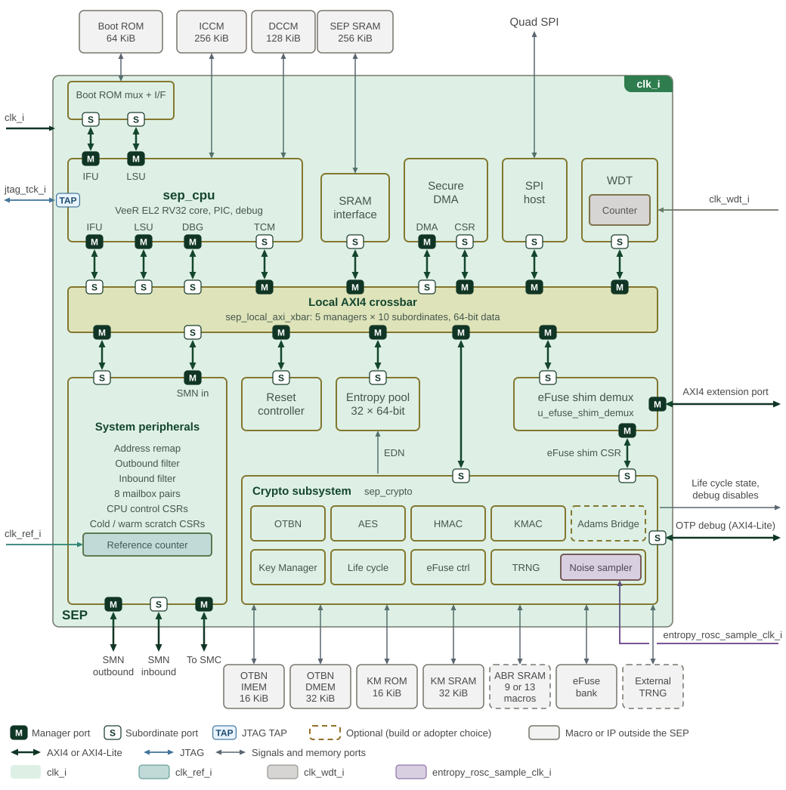

Clocks and Resets
1. Clock Distribution
The SEP system fabric, CPU and cryptographic subsystem receive clk_i.
The CPU and some cryptographic blocks gate branches of this clock locally;
these branches do not provide independently programmable CPU or accelerator
frequencies. The other clock inputs serve reference counting, watchdog timing,
entropy sampling and JTAG debug.
| Input | Use |
|---|---|
|
Main functional clock for the fabric, CPU, cryptographic subsystem and register interfaces. |
|
Free-running reference clock counted by |
|
Watchdog timer clock. The watchdog register interface uses |
|
External entropy-sampling clock option. Each noise-source sampler selects between this input and the internal shared ring oscillator, then applies its sample-clock divider. |
|
CPU JTAG TAP clock; debug requests cross into |
SEP clock tree and clock domains overlays these clock domains on the SEP top-level diagram.
The CPU TAP runs on jtag_tck_i; local clock gating and derived clocks are
described below.
The CPU has a free-running branch and a pipeline branch gated according to
halt/pause state, flush activity and clock override. SPI generates its serial
clock locally. Entropy-source oscillators and sample clocks are distinct from
the main functional clock. The diagram describes connectivity; operating
frequencies and timing constraints belong to the platform integration.

2. Reset Architecture
Reset scope determines which state survives a restart. In normal operation (with debug and scan overrides inactive), SEP uses the following reset boundaries.
| Reset | Scope and release condition |
|---|---|
Cold reset ( |
Resets the early infrastructure, including the local AXI crossbar, OTP controller, watchdog and reset-isolation sequencers. This infrastructure can operate before the boot-qualified SEP reset is released. |
Boot-qualified SEP reset ( |
The OTP controller qualifies release with fuse sensing complete, cold reset released and |
CPU reset ( |
Combines |
Software-controlled engine resets |
Separate requests for Key Manager, OTBN, AES, HMAC, KMAC, Adams Bridge and the shared TRNG domain. Each sequencer isolates its required AXI paths and waits for the isolation acknowledgements before asserting reset. |
A watchdog restart therefore does not return the cryptographic engines or
their software reset requests to cold-reset defaults; see the
software reset section
of the Programmer’s Guide.
The watchdog itself uses cold reset; its timer-domain reset release is
synchronized to clk_wdt_i.
JTAG can override the SEP and individual engine resets. These overrides do
not perform the software-request isolation sequence. Scan test enable selects
scan_rst_ni at the SEP reset synchronizer and the final engine reset outputs.
These debug/test paths are separate from normal software recovery.
The Platform Reset chapter describes the shared reset sources and subsystem effects. The SEP Reset Controller owns the software programming sequence, AXI isolation behavior and shared TRNG-domain details, including the distinction between the entropy subsystem and the Key Manager sampler.